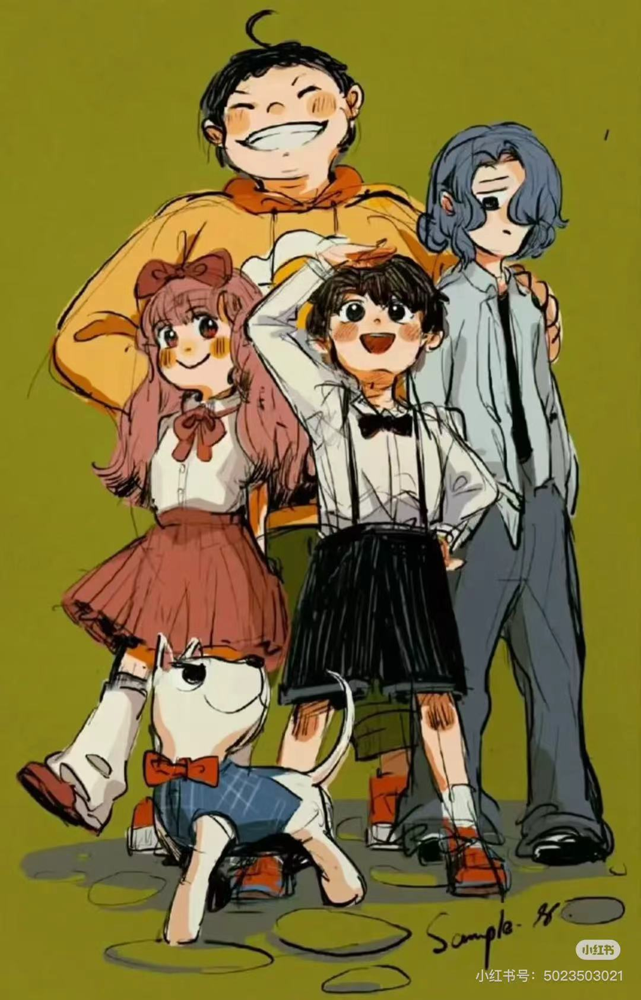

故事介绍
《查理九世》是一个大人心里的小孩子为小孩子心里的大人写的故事。希望读者们能跟随“查理九世”的冒险，体验最神奇的故事，体验那种刚开始战战兢兢、有点好奇、又有点危险的感觉……从而深深陷入文字那强大而迷人的魅力，借以获得成长的勇气与力量。 育林小学四年二班的墨多多是个好奇又贪玩的小孩，老师眼中的“问题多多”，同学眼中的“怪胎”。 所有神秘事件都是他的心头好，到世界各地去冒险探秘就是他最大的梦想。 自从一只奇怪的“查理九世”来到墨多多的家，事情就不对劲儿了，一系列令人惊叫不已的事件发生了：一本怎么也扔不掉的“亡灵日记”……一张画满扭曲眼睛的蜡笔画……一首恐怖的鹅妈妈童谣……[2]？这些用力书写的腥红色字迹想告诉墨多多什么？ 嘿嘿，答案当然要自己寻找！
图书目录


第一册为：Ⅰ 谜境徽章之旅 1.《黑贝街的亡灵》 2.《隐匿的巫女面具》 3.《乌鸦城的诡局》 4.《法老王之心》
第二册为：Ⅱ 战栗追踪之旅 5.《消失的医务室》6.《暗夜的血族》 7.《青铜地宫的献礼》 8.《秘境森林》
第三册为：Ⅲ 黄金地图之旅 9.《羽蛇神的黄金眼》 10.《最后的古寺神佛》 11.《沉没的海神之船》 12.《失落的海底城》
第四册为：Ⅳ 秘境珍宝之旅 13.《鬼公主的嫁衣》14.《幽灵列车》15.《海龟岛的狩猎者》 16.《不死国的生命树》
第五册为：Ⅴ 鬼影迷踪之旅 17.《外星怪客》 18.《午夜温泉的密语》 19.《水晶头骨的启示》 20.《黑雾侏罗纪》
第六册为：Ⅵ 浮空营地之旅 21.《沙海谜国》22.《所罗门王的魔戒》23.《香巴拉，世界的尽头》 24.《末日浮空城》
第七册为：Ⅶ故地寻奇之旅 25.《稻草人之乡》 26.《雪山巨魔》27.《九尾灵猫》 28.《深湖暗影》
作者介绍
笔名：雷欧幻像（编辑组） 生日：10月6日 血型：B 身高：1.76m体重：168斤 特长：发呆、装傻 兴趣：做模型、养小动物、书 爱看的书：《三体》 代表作：《查理九世》17-27《怪物大师》 认为最好的组合：三男一女一萌宠
故事导入
《查理九世》是一套大型原创冒险小说，也是一套儿童游戏故事书。该书的主人公--幻想成为冒险家侦探的蹩脚小学生墨多多，在生日时收到了一份来自爷爷的赠礼，这是一只有着悠久皇室血统证明的狗，它的名字是"查理九世"。
但是这似乎不是一只简单的狗，想象之外的麻烦接踵而至，一个个巨大而善恶未知的秘密随之展开。破解密码，追踪足迹，分析推理，墨多多(墨小侠)、尧婷婷、虎鲨(胡沙)、扶幽，四个少年伙伴知难而进，无所畏惧，破解了一个又一个迷境和案件。